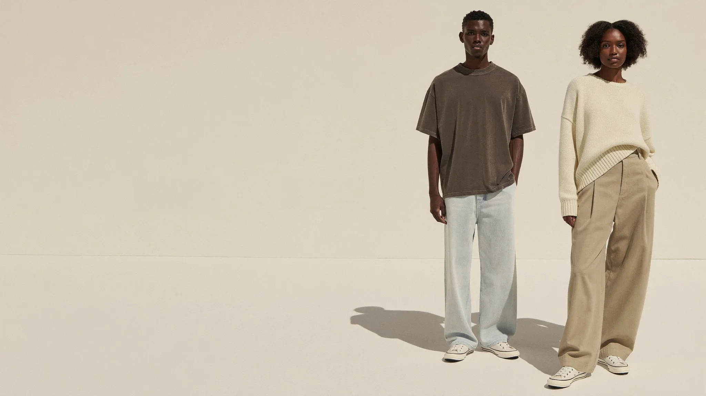

Fewer, larger imagesOne image per screen at a time. Nothing competes.
Real type hierarchyOne display face with character, one quiet text face, three sizes only.
AirMargins of 8 to 12% of the screen. Sections breathe for a full scroll before the next.
Motion with intentSmooth scroll, text that reveals once, images that drift slower than the page. Nothing bounces.
Restraint in copySix words in a headline. Prices and labels small and exact.
Gallery
Editorial serif · bone and ink · clay accentA

Drop 01 · Six looks
Heavy cotton,
quiet shapes.
Shop the look
Type
Instrument Serif
Display at 72 to 120px, italic for one word. Body in Inter 300/400 at 15px. Labels 10px uppercase, tracked.
Motion
- Slow: 1.2s eases, nothing under 0.6s
- Headlines fade up line by line
- Images start at 1.1 scale and settle
- Hover: image crossfades to second shot
Feels like The Row, Toteme, COS campaign pagesRisk can look sleepy without strong photos
Swiss
Heavy grotesk · white and black · signal blueB
Drop 01 — 12 pieces
Heavy
cotton.
Shop all
Type
Archivo Black
Display 900 weight, tight tracking, uppercase, 80 to 160px. Body in Archivo 400 at 14px. Visible 4-column grid lines, big index numbers.
Colour
WhiteBlackSignalPaper
Motion
- Fast: 0.5s, sharp easing
- Text slides up out of a mask
- Marquee strips, counters, hover inverts
- Page changes wipe in a block of colour
Feels like Represent, Aimé Leon Dore, Carhartt WIP dropsRisk streetwear-loud; less "quiet luxury"
Dusk
Soft serif · warm charcoal · sandC
Drop 01 · Six looks
Made slowly,
worn daily.
Enter the drop
Type
Fraunces Light
Display at 300 weight, large optical size, italic accents in sand. Body in Manrope 300/400 at 15px, cream on charcoal.
Colour
CharcoalSandCreamUmber
Motion
- Cinematic: looping video hero, film grain
- Parallax layers, images drift slower than text
- Sections fade from dark into light shop pages
- Cursor-following image previews on desktop
Feels like Fear of God Essentials, Jacquemus night campaignsRisk dark pages sell slower for basics; needs video